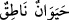

varlığın kabiliyeti kadar bu hakîkatten hissesi vardır. Fakat o kendi başına tek bir
hakîkattir. O, genel ve şumullü bir varlıktır. Nitekim “konuşan canlı (
)”
sözünün, bütün ferdlere şâmil ve genel bir mânâsı vardır. Bu söze dâhil olan ferdlerin
çokluğu hakîkî olarak tekliğine tezat teşkil etmez.
Şu halde Hz. Peygamber (a.s.)’ın: “Cennetliklerle Rab’lerini görmeleri arasında
Allah’ın vechindeki ridâü’l-kibriyadan (büyüklük perdesinden) başka bir şey yoktur.”
sözünün manası, “zâtın onların mertebelerinin ve marifetlerinin saflığına göre tecellî
ettiği her birinin hakîkatından başka birşey yoktur.” demektir. Bu hakikat, onlarla zat-ı
ahadiyyet arasında engel değildir. Çünkü bu hakîkatin ötesinde, orada tecellî etmesinden
ve onun kendisine ayna olmasından sarf-ı nazar edersek sırf mutlaklık (ıtlâk-ı sırf)
vardır. Ona hangi perde olursa olsun rü’yet taalluk etmez.
Hak Teâlâ’ya bakan her kişiye zâtın cemâli, o kişinin kendi hakikatinden açılıp
görünür. İşte o hakikatten O’na bakar. Bu hakikat, ne bakmaya ne de zâta bir engel teşkil
etmez. Çünkü o bir ayna gibidir. Zâhirî bakış tam bir kayd yani bağdır. Zât hakkında bu
hakikatın ötesi ise sırf mutlaklık (ıtlak-ı sırf)dır. İkisi arasında hiçbir yönden münasebet
yoktur. Bu hakîkat, mukayyedlik ve mutlaklık arasında her ikisini de toplayan bir berzah;
yani aralıktır. Nitekim Peygamber Efendimiz (a.s.) “Nefsini tanıyan, Rabb’ini
tanır.”[152] buyurmuştur.
Ârifin irfanı nefs-i küllîsine ve hakikat-i câmiasına taalluk etmezse Rabb’ini
tanıyamaz. Çünkü Rabb’i her türlü kayıt, nisbet ve izafetlerden uzaktır. Bu bakış
açısında O’na marifet taalluk etmez. Fakat Rabb’inin isimlerinin hakikatleriyle tecelli
ettiği kulun nefsine gelince; bu bakımdan ona Allah’ı görme (rü’yet) taalluk eder.
Böylece nefsinin hakikatı ve onu tanımak, Rabb’ini marifete ayna olur. Çünkü
perdelenen ile perde arasında asla mâni yoktur. Hatâ edenler, gâibi şâhide kıyas ile hatâ
etmişlerdir ki bu imkansız ve bâtıldır. Çünkü bu hadise göre bakanla perdelenen
arasında, engelleyici bir perde ve berzah olması gerekmez. Onun için Hüdâyî:
“Allah’ın âlim-i billah olan kullarının akıllarına koyduğu şey perdesidir.” demiştir.
“Perdenin perdelenenle bakanlar arasında mâni olup rü’yetin imkansız olduğu
hususunda tereddüt, basiretin körlüğündendir. Bundan Allah’a sığınırız.
Basîretin kör olması üç şeyden olur: Âzâları Allah’a isyanda kullanmak, ibadetlerde
yapmacık davranıp riyakâr olmak, Allah’ın yaratıkları hususunda tamakârlık.
Hakk’ın ihâtası sabit olduğu için O senden perdelenmiş değildir. Basîretinin üzerine
biriken ârızî ayıp ve kusurlar sebebiyle ve gözünde daimi bulunan ve ancak ahirette
kalkacak olan körlükten dolayı O’na bakmaktan perdelenen sensin. İşte Allah’ı görmek
bu ayıp ve kusurları gidermeye bağlıdır. Yoksa Allah Teâlâ’nın perdelenmiş olması
imkâsızdır, tasavvur edilemez. Şu halde sen Allah’ı nefsi için isteyenlerden ve nefsini
de Rabbi için isteyenlerden olma. Çünkü bu câhillerin hâlidir.
Bazı müfessirler ‘İdrak ile göz bir arada zikredildiğinde rü’yet (görme) kastedilir.’
demişlerdir. Çünkü “Gözümle idrak ettim (kavradım)” sözü ile “Gözümle gördüm.”
sözü aynı manadadır. “Gözler O’nu kavrayamaz.” cümlesinin mânâsı “Dünyada gözler